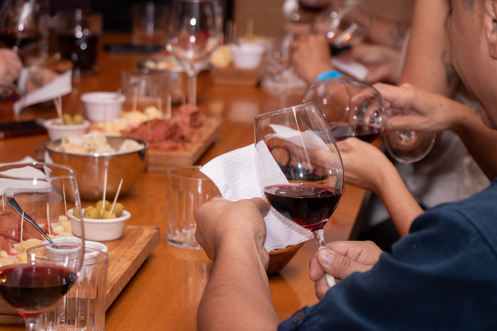
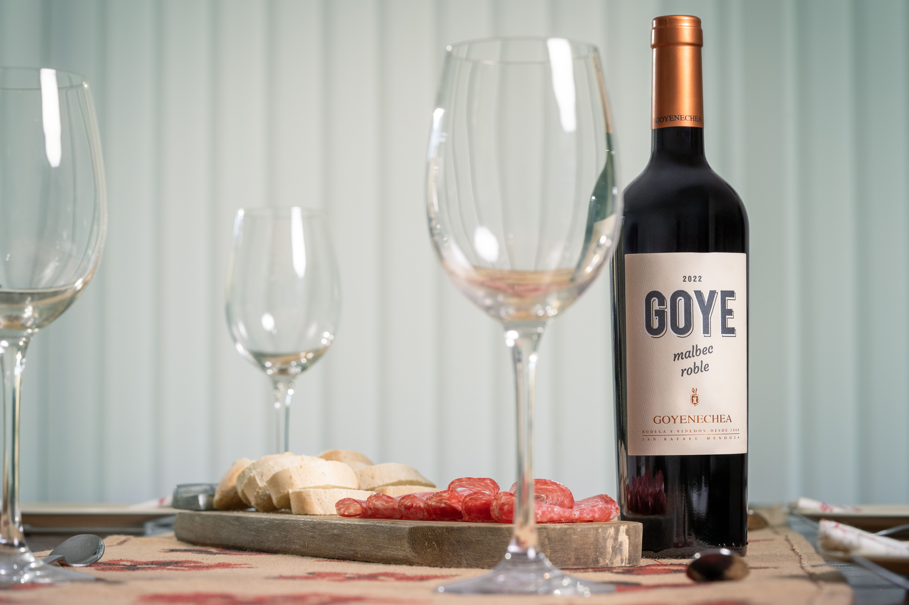
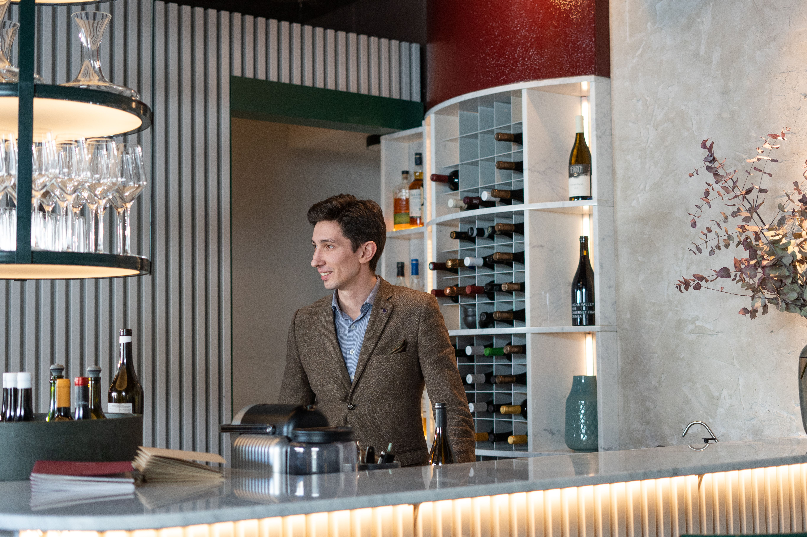

Nossos Serviços
Na Monte Dourado, oferecemos experiências especiais para quem deseja
conhecer melhor o mundo dos vinhos e aproveitar momentos únicos.
Degustação
Na degustação, o cliente pode conhecer diferentes tipos de vinhos,
seus aromas, sabores e características.

Descubra novos vinhos e aprenda sobre suas características em nossas degustações.
- Conhecer novos vinhos.
- Experimentar diferentes sabores.
- Aprender sobre cada tipo de vinho.
- Descobrir novos aromas e características.
Harmonização
A harmonização ajuda a escolher o vinho que melhor combina
com cada tipo de comida, tornando a experiência ainda mais especial.

Aprenda a combinar vinhos com diferentes pratos para uma experiência gastronômica completa.
- Vinhos com carnes.
- Vinhos com massas.
- Vinhos com queijos.
- Vinhos com sobremesas.
Atendimento
Nossa equipe também auxilia os clientes na escolha dos vinhos
ideais para diferentes ocasiões.

Conte com nosso atendimento especializado para escolher o vinho perfeito para cada ocasião.
- Vinhos para presentes.
- Vinhos para festas.
- Vinhos para refeições.
- Vinhos para ocasiões especiais.
Uma experiência para todos os momentos
Na Monte Dourado, cada serviço é pensado para proporcionar
conhecimento, qualidade e uma experiência inesquecível aos nossos clientes.